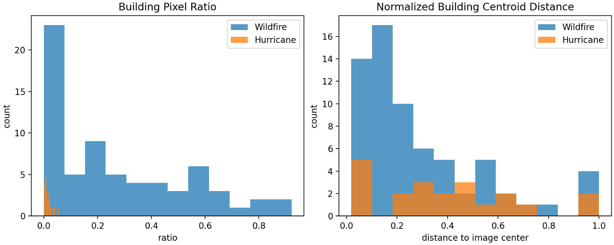
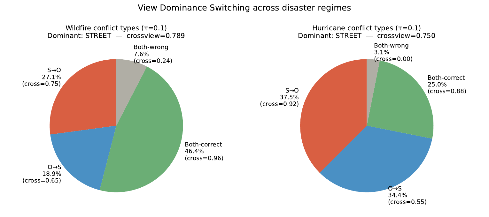
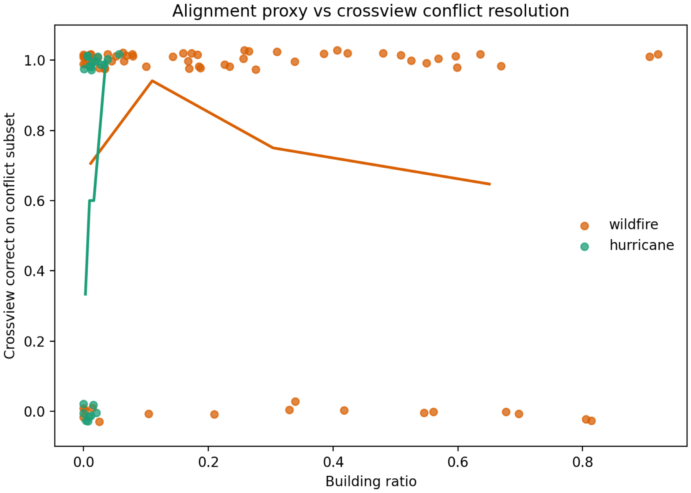
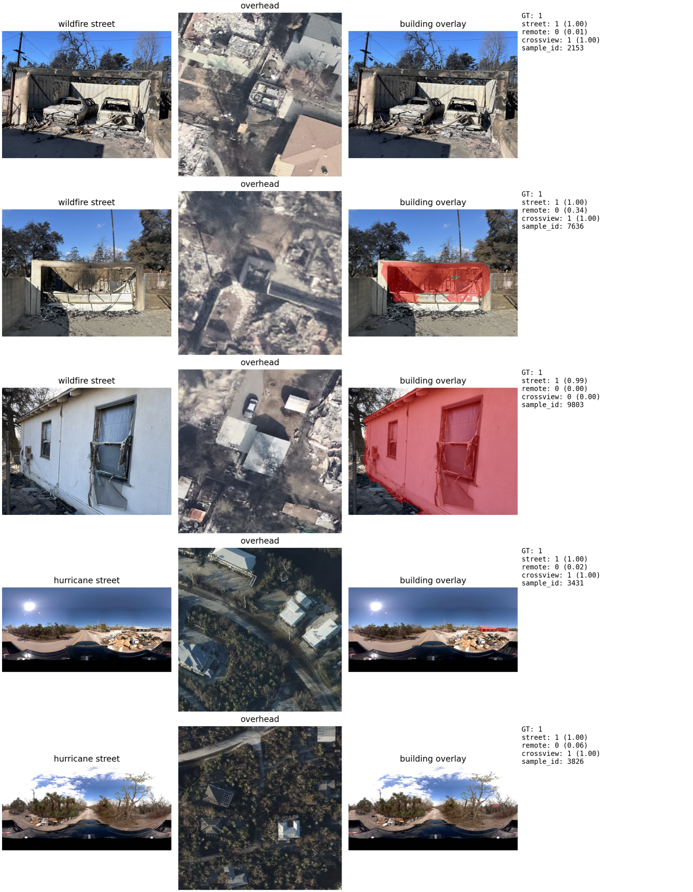
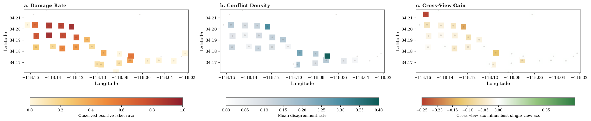
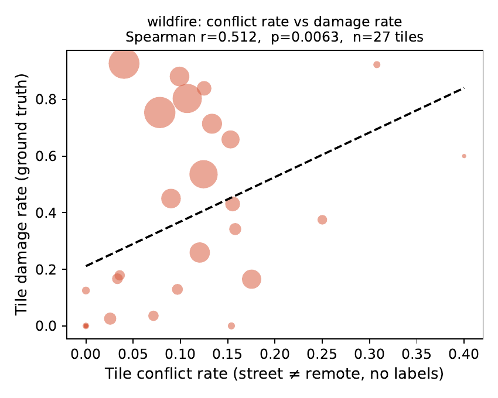
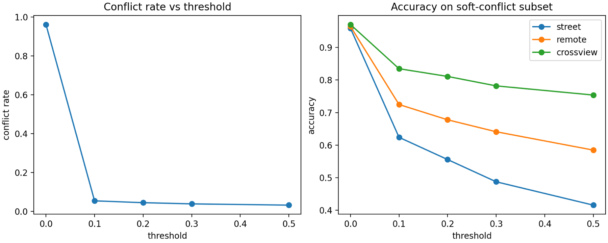

When Cross-View Helps Most
Conflict-Aware Disaster Triage Across Spatial Observation Regimes
Cross-view fusion helps most when street-side and overhead evidence conflict, but the value of each view depends on the spatial observation regime.
Central Thesis
Do not ask only whether fusion helps. Ask where the views disagree.
The work reframes multimodal disaster triage around disagreement between the street-only and remote-only predictors. The paired-view model is most consequential on those conflict cases, not on easy samples where both single-view models already agree.
Observation Regimes
Wildfire and hurricane imagery differ in target alignment.
Wildfire ground views are property-centric inspection images. Hurricane ground views are broader panoramic scenes. This changes which modality is likely to arbitrate conflict.

Conflict-Aware Evaluation
CAE makes the hard cases visible.
For a threshold τ, the conflict subset contains samples where the two single-view probabilities differ by more than τ. The paper reports standard Overall-F1, Conflict-F1 on that subset, and crossview gain relative to the stronger single-view baseline.
Cτ = { i : |pstreet(i) − premote(i)| > τ }
- Overall-F1
- Aggregate performance over the full test set.
- Conflict-F1
- Performance only where the single-view models disagree.
- Crossview gain
- Conflict-F1(crossview) minus the better single-view Conflict-F1.
Main Results
Crossview often wins on conflict cases, but the grouped-clean split keeps the claim honest.
| Setting | Best Single Conflict-F1 | Crossview Conflict-F1 | Gain | n |
|---|---|---|---|---|
| Wildfire sensitive | 0.6230 street | 0.6618 | +0.0388 | 435 |
| Hurricane endpoint | 0.6842 street | 0.7647 | +0.0805 | 32 |
| Hurricane moderate+severe | 0.7742 remote | 0.7867 | +0.0125 | 128 |
| Hurricane endpoint grouped clean | 0.8101 street | 0.7949 | −0.0153 | 80 |


Qualitative Evidence
Conflict cases reveal what each view can and cannot see.
The qualitative examples show cases where overhead evidence misses facade-level damage, and cases where panoramic street imagery does not align cleanly with the target building.

Spatial Signal
Model conflict is not only an error mode. It can become a damage proxy.
In the wildfire dataset, tile-level conflict density co-locates with higher realized damage. This turns disagreement between two discriminative models into an unsupervised spatial signal.


Operational Extensions
Conflict can guide training and deployment.
ConflictFocalLoss
Reweights training examples whose street and remote embeddings disagree, improving wildfire Conflict-F1 from 0.6618 to 0.7208.
Baseline0.6618
γ = 0.250.7190
γ = 0.50.7208
Adaptive Inference Cascade
Routes samples to the paired-view model only when the two single-view predictors disagree strongly, preserving performance while reducing full cross-view calls.
Wildfire stage 29.5%
Wildfire cascade F10.9498
Hurricane stage 222.3%

What This Paper Claims
Cross-view disaster triage should be conflict-aware and regime-aware.
- Evaluate fusion where single-view evidence disagrees, not only on average cases.
- Interpret modality value through spatial observation regime and target alignment.
- Use conflict as a reusable signal for training, routing, and spatial damage mapping.
- Do not claim that crossview always wins; the grouped-clean hurricane endpoint is deliberately conservative.